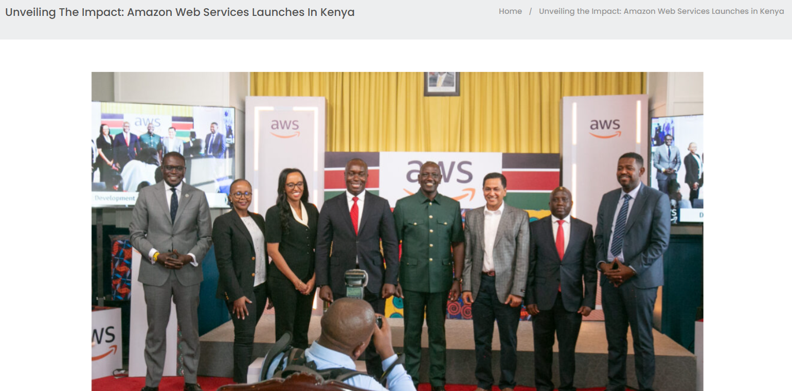

AWS’s Expansion into Kenya’s Cloud Ecosystem
In a growing interconnected world where the internet is often looked at as a neutral, democratizing force while beneath the surface lies a complex geopolitical web where digital infrastructures, data and algorithmic systems are all shaped by and reinforce existing global power structures. Many scholars of digital colonialism have argued that control over internet infrastructure and data governance mirror colonial logics of extraction and dependence. This essay explores these dynamics through the case study of the Amazon Web Services’ or AWS expansion into Kenya in 2024. I will be drawing from readings by Birhane, Graham and many others from the course readings as well as draw from my own sources to help this essay analyse how AWS’s presence in Kenya reflects broader patterns of digital coloniality and structural inequality in the internet age.
In the year 2024 AWS launched a new Local Zone in Nairobi which marked a significant expansion of its infrastructure in Africa. According to reports by TechCrunch in 2024, the move was marketed as a step towards improving latency and accessibility for Kenyan businesses and developers (TechCrunch, 2024). Kenyan officials had also celebrated the launch as a boost for digital transformation, citing its potential to enhance local innovation and economic growth. However, this narrative of digital development obscures deeper concerns around sovereignty, dependency and control. Although the infrastructure is physically based in Kenya, AWS retains ownership, technical governance and control over data flows which appears to empower but it actually in fact integrates Kenya more tightly into a global cloud ecosystem which is dominated by U.S. based corporations.
AWS’s expansion is a contemporary manifestation of the imposition of Western data and AI infrastructure in African contexts without mutual investment in local autonomy or knowledge systems which is known as “algorithmic colonization” or as the author Birhane explains it (Birhane, 2020). Just as colonial powers once extracted raw materials from African soil, modern tech corporations extract data, labour and economic value through digital infrastructures which maintains control while still leaving a little room for local ownership or governance. Viewing Keyna’s cloud infrastructure in this light shows us that it is not a sign of digital liberation but a sign of a deep entanglement in techno-colonial systems. The AWS Local Zone offers improved access but does not empower Kenya to shape the terms of digital engagement, which includes decisions about data storage, algorithmic standards, and platform policies all remaining externally governed. This means that colonialism persists not through direct rule, but through infrastructural and algorithmic dependence (Birhane, 2020).
The reading “Internet Geographies” by Graham helps to explain how global digital power is unevenly distributed. The author argues that while internet is often assumed to be spatially neutral, it in fact privileges certain locations, typically in the global North through their infrastructural concentration, data centralization and network hierarchies. Through this view, Kenya’s new data center does not decentralize digital power, but it merely serves as a peripheral node in a larger network controlled from abroad. The term “Local Zone” is actually misleading as AWS promotes this illusion of local infrastructure, yet the center’s governance, software and economic benefits remain in the United States. Kenyan developers may experience benefits from having better latency resulting in faster load times, but they are still locked into Amazon’s proprietary systems which in the end limits their capacity to develop independent digital ecosystems. Furthermore, the placement of data infrastructure in Kenya is not simply a matter of technological logistics but it is a geopolitical decision. AWS’s expansion represents a strategic move to cement influence in African digital markets that are ahead of competitors like Huawei or Alibaba also reinforcing U.S digital hegemony through corporate proxies.
While AWS’s infrastructure may technically reduce barriers around digital access, it falls short in addressing deeper forms of digital inequality. In the reading “Digital inequalities in the age of artificial intelligence and big data” written by Christoph Lutz, it is explained that digital inequality is not only whether people can access technology, but also about how they can use it meaningfully and participate in shaping its development (Lutz, 2019). In Kenya, the AWS Local Zone may improve service speeds for tech companies, but ordinary citizens still remain excluded from decisions about how their data is stored, processed or even monetized. The knowledge required to build and govern such infrastructures remain concentrated in the Global North meaning that most Kenyan developers and policymakers must rely on foreign expertise to maintain and optimize these systems. This in turn reinforces the “third level” of the digital divide which is the ability to produce content and control infrastructure (Ruiu and Ragnedda, 2017). AWS’s dominance also undermines Kenya’s potential to cultivate its own open-source or regionally developed platforms. Local alternatives actually struggle to compete with the scale, funding and brand recognition of Amazon which deepens their dependency and reduces the innovation capacity within the region.
A key feature of digital coloniality is its ability to frame dominance as generosity. Giorgos Verdi explains that technocolonialism operates by presenting extractive or controlling systems as developmental opportunities (Verdi, 2020). AWS’s expansion in Kenya was widely reported in glowing terms by local and international media, often repeating Amazon’s own press language without critical analysis. Social media responses were similarly celebratory with Kenyan tech influences who applauded the move claiming it as a step towards modernization. Although this celebratory discourse masks the structural inequalities embedded in such partnerships as AWS reaps substantial commercial benefits while Kenya takes on the infrastructure and regulatory risks. There is also very little public discussion about long-term data sovereignty, cybersecurity implications or the risk of monopolistic entrenchment in local digital markets. This reflects a broader pattern of digital hegemony, where global platforms maintain control over how knowledge is organized, accessed and monetized cross geographies (Ballatore et al., 2017). This is far from being neutral intermediaries and companies like AWS are actively shaping how the internet works in Kenya, which influences everything from software compatibility to the architecture of digital services.
In this the question asked is, “What alternatives are there to this dynamic of digital colonialism?” It is argued in “Making a Feminist Internet in Africa” by Magenya, that building a feminist internet in Africa requires rethinking infrastructure, ownership and epistemology from the ground up (Magenya, 2020). To achieve this, it means that there must be an empowering over local communities to control their own data, develop regional appropriate platforms and resist the normalization of foreign dominance in digital development. In this specific context this could involve supporting public and community-run data centers which allows for investment within open-source technologies and promoting legal frameworks that protect data sovereignty. This also means fostering critical media literacy so that digital partnerships are evaluated not just for their technical benefits but for their geopolitical and ethical implications. A truly independent digital future for Kenya and other African nations will not most definitely not be achieved by hosting the servers of global tech giants but it will require new models of collaboration, innovation and governance rooted in justice, autonomy and decolonial thinking.
In conclusion AWS’s 2024 expansion into Kenya faces many complex intersections between internet infrastructure, geopolitics and digital coloniality. While promising development and access it is evident that this move rather entrenches Kenya’s dependence on foreign infrastructure and governance, showing us patterns of inequality rooted in historical colonial systems. Though the lens of critical internet geographies, digital inequality theory and decolonial AI frameworks, we can understand this development as not purely a technical evolution, but as a deeply political act. Rather than accepting digital integration as inherently beneficial we must ask questions such as, who will build the internet, who will control it and who exactly will benefit from it? It is only by addressing these questions that we will be able to imagine a more independent digital future.
References
- Ballatore, A. (2017) ‘Digital Hegemonies: The Localness of Search Engine Results’, Annals of the American Association of Geographers, 107(5), pp. 1194–1215. Available at: https://doi.org/10.1080/24694452.2017.1308240. (Accessed: 11 June 2025).
- Birhane, A. (2020) ‘Algorithmic Colonization of Africa’, SCRIPT-ed, 17(2), pp. 389–409. Available at: https://doi.org/10.2966/scrip.170220.389. (Accessed: 11 June 2025).
- Graham, M. (2014) ‘Internet Geographies’, in Graham, M. and Dutton, W.H. (eds) Society and the Internet. Oxford University Press, pp. 99–116. Available at: https://doi.org/10.1093/acprof:oso/9780199661992.001.0001 (Accessed:11 June 2025).
- Lutz, C. (2019) ‘Digital inequalities in the age of artificial intelligence and big data’, Human Behavior and Emerging Technologies, 1(2), pp. 141–148. Available at: https://doi.org/10.1002/hbe2.140. (Accessed: 11 June 2025).
- Magenya, S. (2020) ‘Making a Feminist Internet in Africa: Why the internet needs African Feminists and Feminisms’, GenderIT.org, 17 March. Available at: https://www.genderit.org/editorial/making-feminist-internet-africa-why-internet-needs-african-feminists-and-feminisms. (Accessed: 11 June 2025).
- Ruiu, M.L. and Ragnedda, M. (2017) ‘Social capital and the three levels of digital divide’, in Ragnedda, M. and Muschert, G.W. (eds) Theorizing Digital Divides. Routledge. Available at:https://doi.org/10.4324/9781315455334.(Accessed 11 June 2025).
- TechCrunch (2024) ‘AWS launches new Local Zones in Nairobi and Johannesburg’, TechCrunch, 25 January. Available at: https://techcrunch.com/2024/01/31/googles-first-africa-cloud-region-now-operational/ (Accessed 11 June 2025).
- TEMS Africa (2024) ‘AWS launches in Kenya – Image from the launch event [Image], Unveiling the Impact: Amazon Web Services Launches in Kenya’, TEMS Africa. Available at: https://temsafrica.com/unveiling-the-impact-amazon-web-services-launches-in-kenya/ (Accessed: 12 June 2025).
- • Verdi, G. (2020) ‘The Road to Technocolonialism’, Institute for Internet & the Just Society, 22 November. Available at: http://www.internetjustsociety.org/the-road-to-techno-colonialism (Accessed: 4 May 2021). (Accessed: 11 June 2025).